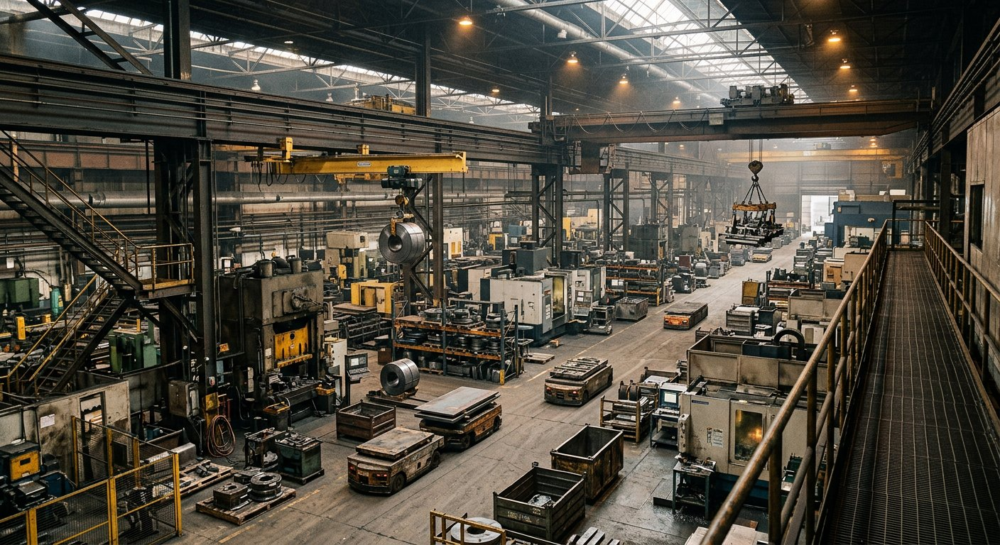
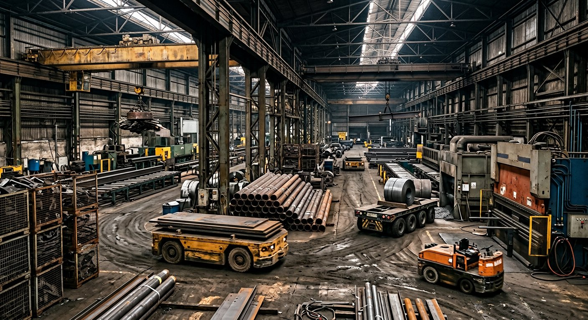
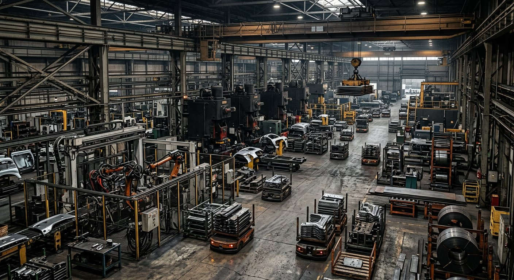
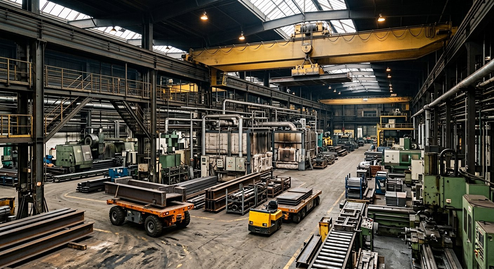

Live systems view
Autonomous factory-floor test
Running
Concept studies 01—07
Field mechanics / Volume 01
Seven focused studies for systemic course mechanics.
01
Autonomous mechanic study
Travelling factory gantries reshape traffic and loose steel across a live route through the production floor.
02
Counterweight mechanic study
Two counterweighted switching bridges tilt between three onward paths, making vehicle mass part of the route decision.
03
Three-dimensional surface mechanic
A one-sided barrel narrows as its break travels across the water. The vehicle must hold a diagonal escape line or be swallowed by the moving lip.
04
Conveyor dynamics study
A straight industrial conveyor course couples belt velocity, driven wheel speed, surface friction and crossing freight into one physical line.
05
Fictional coastal-siege study
Autonomous emplacements sweep a fictional coast while a configurable rover weaves through anti-vehicle minefields, concrete walls, fortified trenches and telegraphed impacts.
06
Rail-transfer dynamics study
Autonomous carriers retain momentum while lateral transfer decks and a rotating rail table repeatedly break, redirect and reconnect the yard beneath them.
07
Elimination race study
Twenty-four racers spiral toward a central finish while an advancing collapse consumes the arena and overloaded radial crossings break beneath the field.
01 / Autonomous course mechanic
A top-view factory greybox for testing how overhead gantry cranes, moving magnetic fields, vehicle construction and tyre grip continuously rewrite the production-floor route.
Live systems view
Running
These references establish the intended realism: unmarked movement corridors created by production machinery, AGVs and transfer carts at floor level, and overhead bridge cranes creating pressure above them. They are reference material only and remain hidden during normal simulation use.




01
02
03
02 / Counterweighted route mechanic
Two side-by-side counterweighted switching bridges connect the entry to three different onward paths. Vehicle mass and ballast leverage decide whether each deck reaches Level 1, 2 or 3.
Live balance view
Running
01
02
03
03 / Travelling surface mechanic
A real-time three-dimensional barrel wave tapered toward one side. Its break sweeps across the water, so the vehicle must hold a diagonal escape line instead of travelling straight into the closing lip.
Live WebGL surface
01
02
03
04 / Conveyor dynamics mechanic
A straight transfer course where conveyor velocity, wheel speed and surface construction determine motion while upper, lower, front and back feeders push industrial freight through the vehicle’s line.
Live conveyor course
01
02
03
05 / Fictional coastal-siege mechanic
An original vehicle-only coastal field. Automated emplacements create readable tracer and impact patterns while a light or heavy rover actively weaves between tank mines, concrete walls, barricades and fortified trenches.
Live coastal field
01
02
03
06 / Autonomous heavy-industry prototype
A loaded carrier crosses a working transfer depot while the permanent way moves beneath it. There is no steering input: wheel torque, mass, brake pressure and machine timing determine whether twelve tonnes of freight clears the yard or leaves the rails.
Live systems view · Kestrel Intermodal Depot / Sector 04
Yard systems live
01
02
03
07 / Twenty-four-car elimination race
Race inward through five collapsing circles. Transfer gates only open briefly, radial crossings retain every impact, and the structural failure behind the pack never stops advancing toward the final span.
Live race · The Meridian Bowl / Heat 07
Twenty-four starters
01
02
03